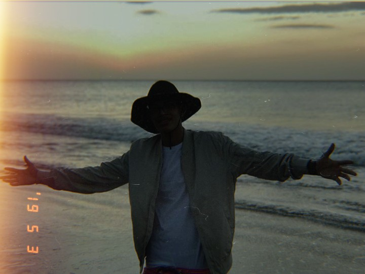
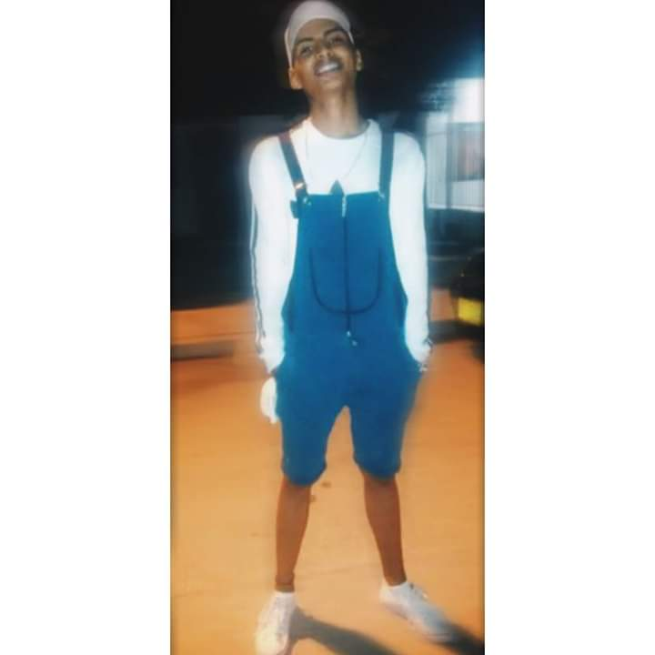
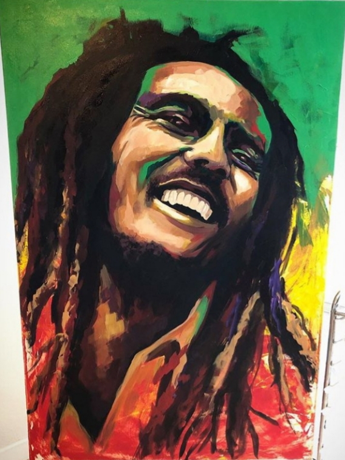

Unas de las coas que más le interesa saber a la gente cuando te quiere conocer o le interesa saber cosas personales son:
Los gustos.
Los disgustos.
Las debilidales.
Las fortalezas.
Los gustos
Mis gustos son muchos pero me basare solo en los más básicos o los más importantes.Entre los mas importantes se encuentan la fotografia, el dibujo, los sistemas tecnologicos, basquetbol, el cine, la pintura, la musica entre otros.En este bloque no podre describir todos pero si los de mas interes.
La fotografia
|  |  |
.jpg) |
.jpg) |
Apesar de tener 18 años en este ambito me cosidero musi bueno, lo que es tomando fotos editando.El no tener una cámara profesional ni los implementos siempre logo destacarme en eso y logro resaltar.
La pintura y dibujo
Desde pequeño siempre he ha gustado dibujar pintar.Y con el pasar de los tiempo he ido mejorando en ese sentido, no lo suelo hacer mucho pero siempre hay algo nuevo.
